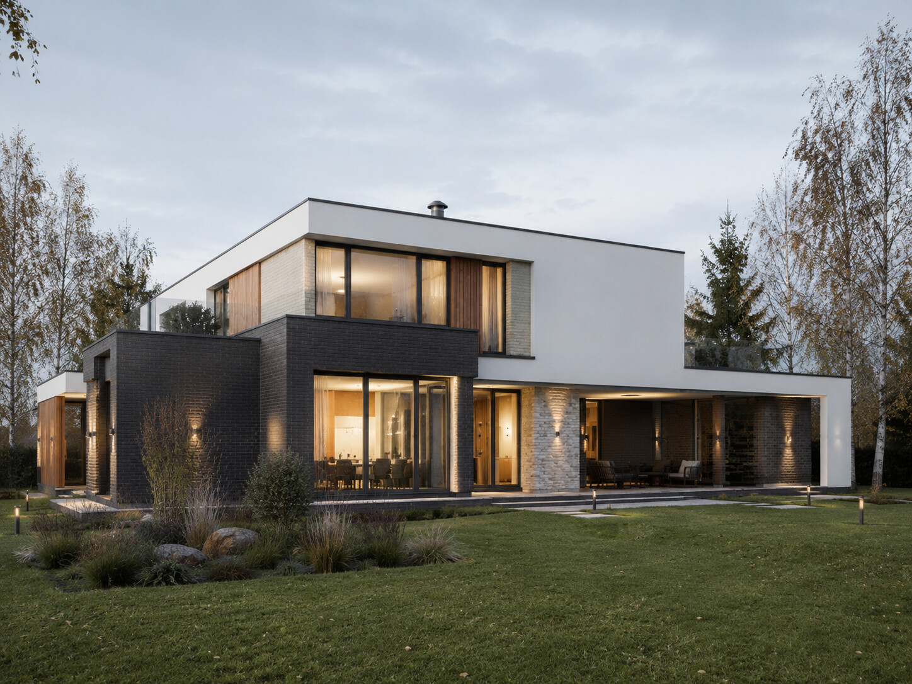
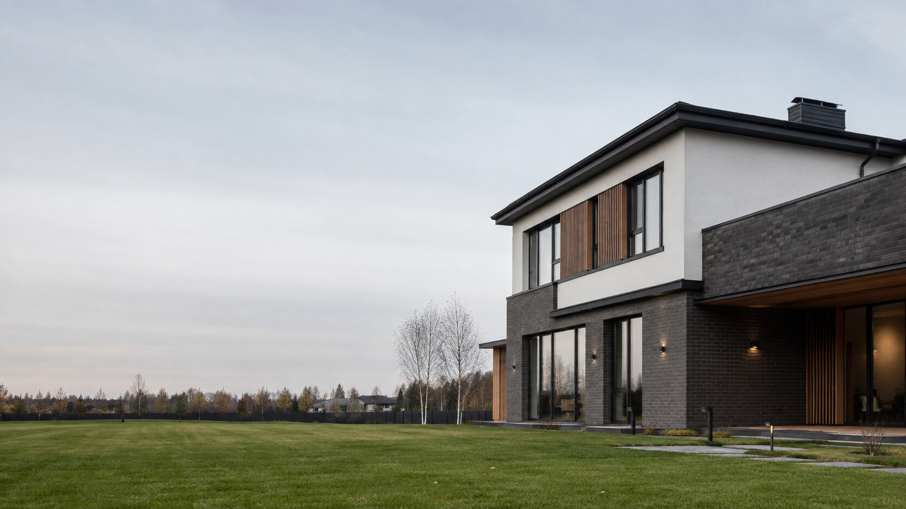
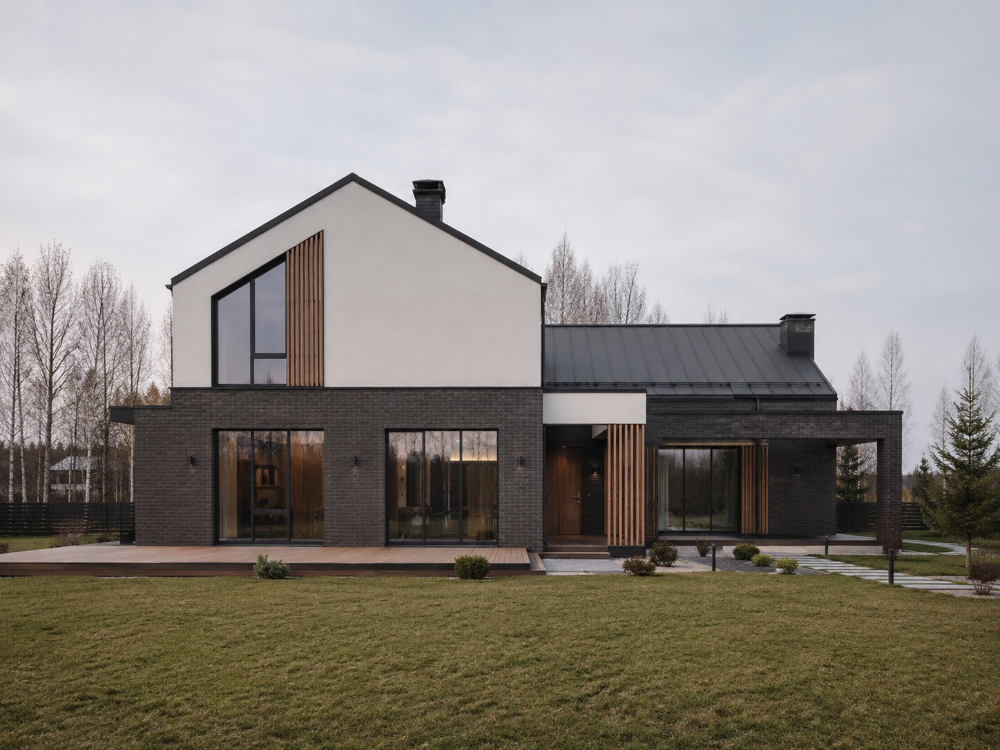
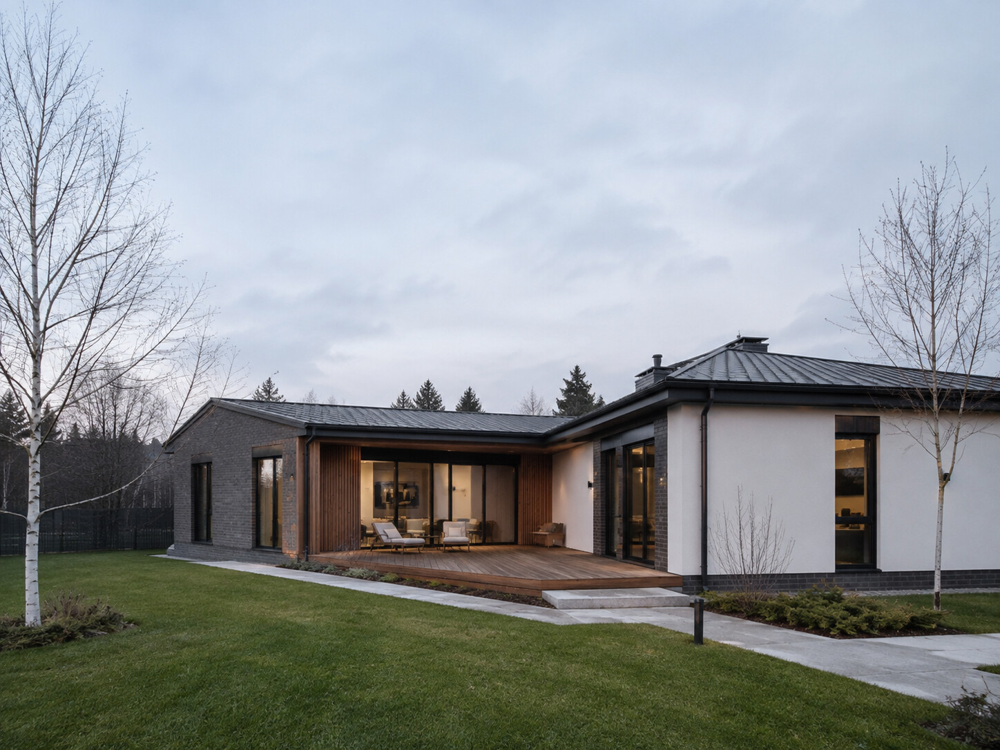
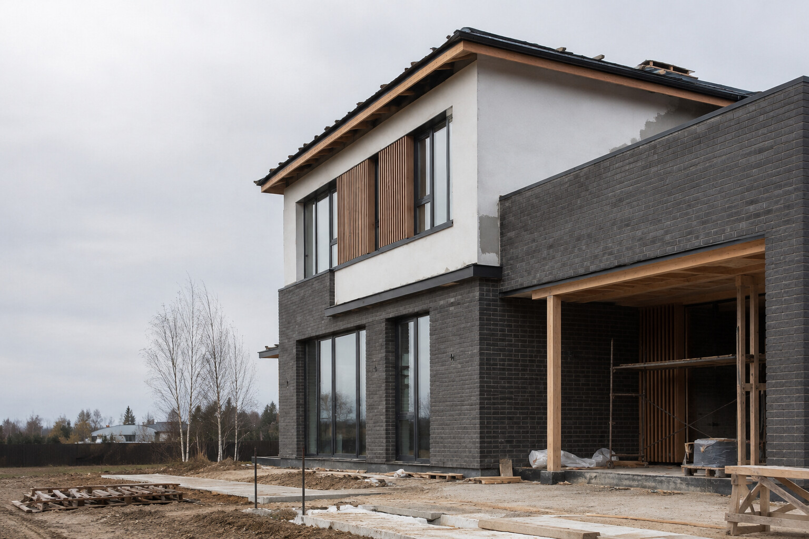
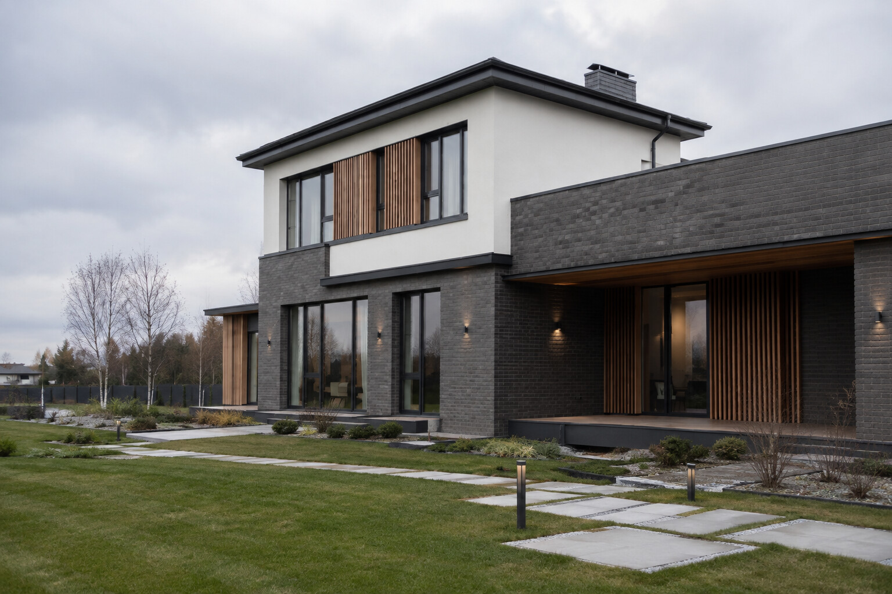
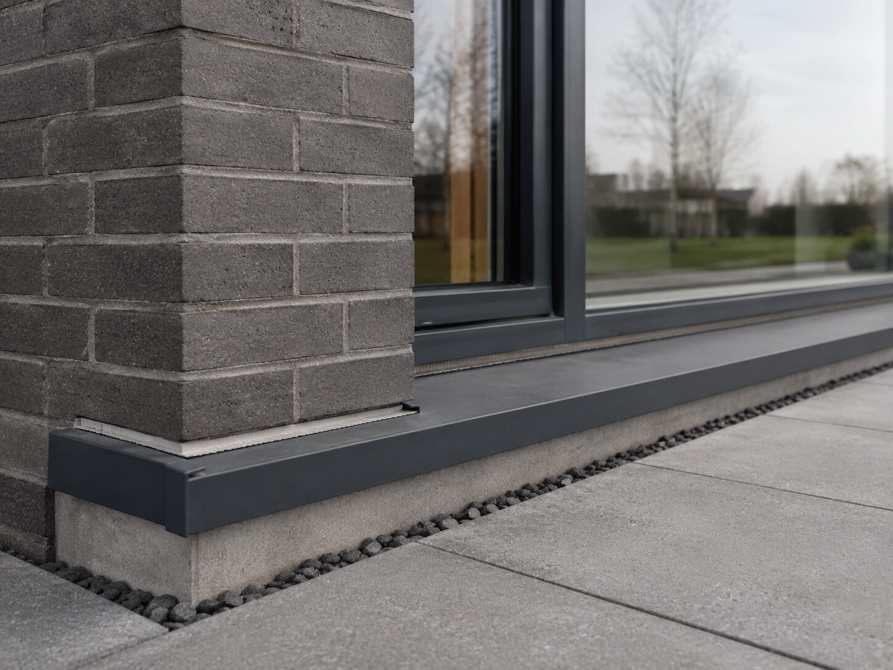
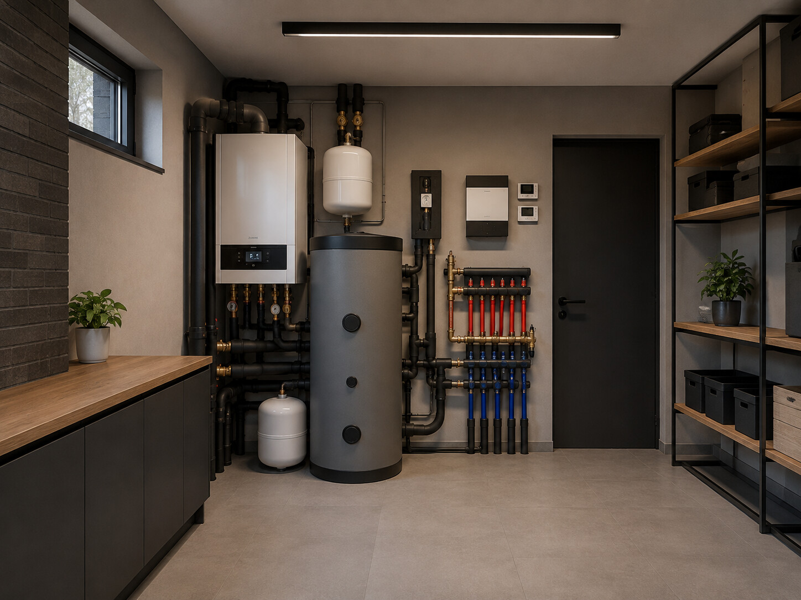
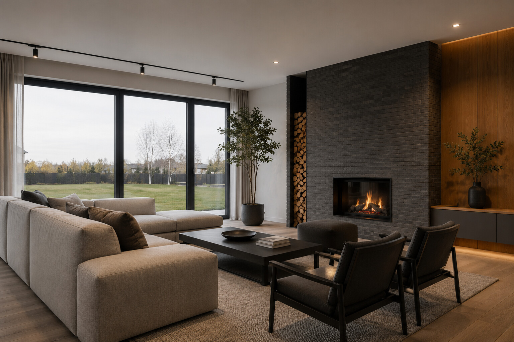

Архитектурная концепция
Москва и Московская область
Проектируем и строим современные загородные дома
От идеи и участка до согласованного уровня готовности — одной командой БазаДом и с единой ответственностью за результат.
* Ориентир 2026: дом до 100 м² из газобетона 400 мм; фундамент, стены, кровля, остекление; материалы, работы и доставка. Без проекта, инженерии, фасада, отделки и НДС. ** В пределах работ и элементов БазаДом по договору.
Выберите исходную ситуацию
С чего начинается ваш проект?
Так мы сразу предложим подходящий следующий шаг.
Наши проекты
Проекты, которые можно адаптировать под участок
Все изображения ниже честно маркированы как архитектурные концепции.

Архитектурная концепция
Архитектурная концепцияСначала — состав результата
Стоимость и состав результата
Ориентир без состава превращается в цену-приманку. Здесь видны границы и логика расчёта.
от 6 млн₽
Дом до 100 м² из газобетона 400 мм в согласованном составе.
- материалы, работы и доставка
- фундамент, стены и кровля
- остекление
Тёплый контур
Базовый строительный результат с понятным составом.
Подготовка к отделке
Следующий уровень готовности — после проверки исходных данных.
Инженерные системы
Состав определяется проектом и выбранной комплектацией.
Готовый дом
Финальная рамка зависит от архитектуры, участка и уровня отделки.
Что влияет на итогплощадьучастокархитектураготовность
Формат доказательного кейса
Один дом — весь путь в одной логике
До публикации как реального кейса объект должен быть подтверждён фотографиями, документами и ролью команды.


Современный дом для постоянной жизни
- Задача
- Дом для семьи и круглогодичного проживания
- Архитектура
- 2 этажа, панорамное остекление, приватная терраса
- Что показываем
- План / факт, изменения, документы и ответственных
- Статус
- Публикуется только после подтверждения фактов
Роль клиента и команды
Стройка не должна стать второй работой клиента
Клиент сохраняет контроль через точки решений, а команда организует исполнение и стыки.
Вы сохраняете контроль, не погружаясь в операционку
Две дорожки показывают, кто принимает решение, а кто отвечает за исполнение.Как это устроено- 01Участок и сценарий
Клиент фиксирует приоритеты
БазаДомБазаДом анализирует ограничения
- 02Архитектура
Клиент выбирает решения
БазаДомКоманда связывает АР и конструктив
- 03Смета и график
Клиент подтверждает рамку
БазаДомКоманда планирует этапы и закупки
- 04Строительство
Клиент принимает этапы
БазаДомКоманда строит, контролирует и отчитывается
- 05Сдача и гарантия
Клиент принимает результат
БазаДомБазаДом сохраняет ответственность
Контроль через proof
Контроль виден в артефактах
Сильное обещание становится доказательством только через документ, дату, ответственного и закрытие замечаний.
01 · этапРаботы до закрытия
Фото и привязка к этапу.
02 · контрольЧек-лист и акт
Критерии и подпись ответственного.
03 · замечаниеСтатус устранения
Что найдено и как закрыто.
04 · отчётПлан / факт
Сроки, изменения и следующий шаг.

Договор и гарантия
Правила риска известны до начала работ
Гарантия имеет смысл только вместе с предметом, исключениями и порядком обращения.
Гарантии на работы БазаДом по договору
В пределах согласованных работ и элементов строительства дома.
Стоимость и состав
Состав результата фиксируется в смете и договоре.
Изменения цены и срока
Влияние видно до письменного подтверждения.
Приёмка и оплата
Этапы принимаются по согласованным критериям.
Гарантийное обращение
Фиксация, проверка, решение и закрытие обращения.
Связность решений
Дом работает как единая система
Услуги публикуются как единый маршрут только после подтверждения состава команды и ответственности.
Все решения связаны ещё до стройки
- 01Архитектура и сценарий жизни
- 02Конструктивные решения
- 03Инженерные системы
- 04Интерьер и отделка
- 05Комплектация и сдача


Перед первым разговором
Вопросы, которые важно закрыть до разговора
Ориентир 2026 года: дом до 100 м² из газобетона 400 мм; фундамент, стены, кровля, остекление, материалы, работы и доставка. Проект, инженерия, фасад, отделка и НДС в ориентир не входят.